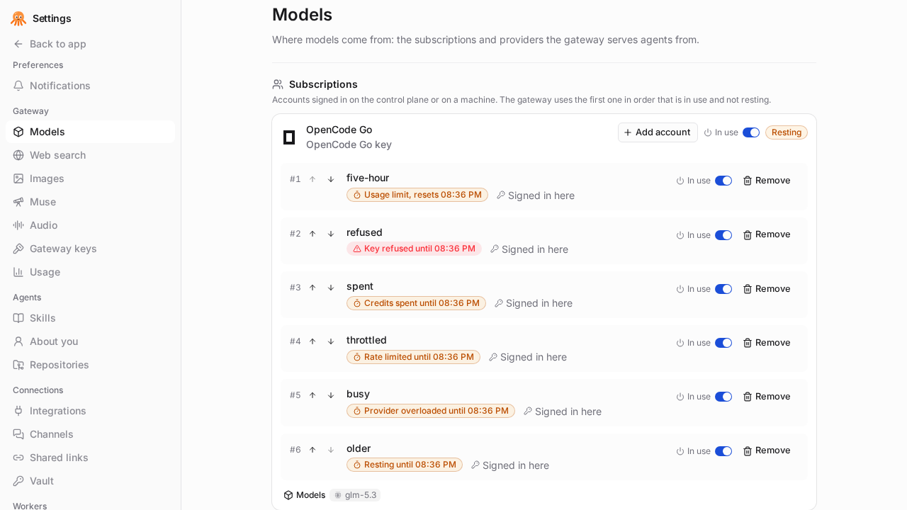
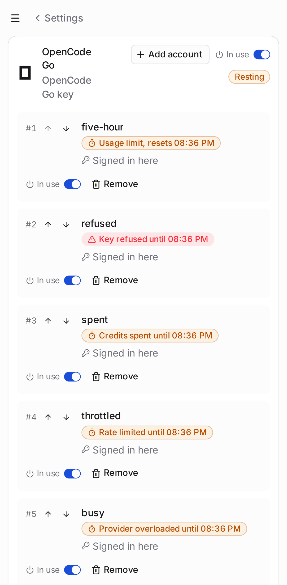
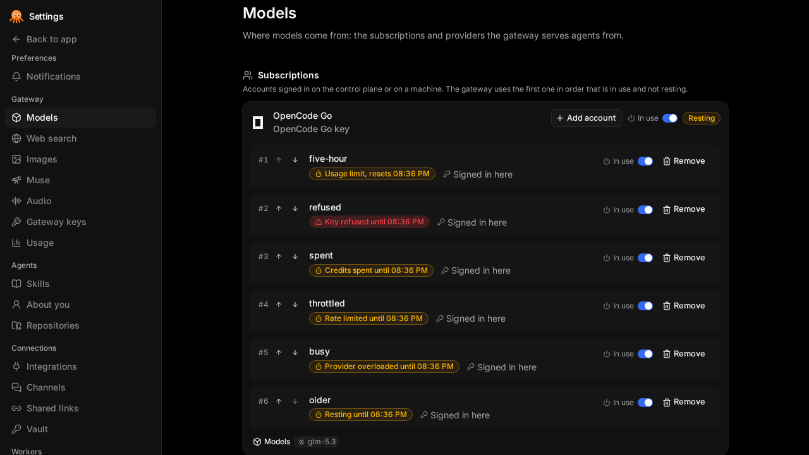
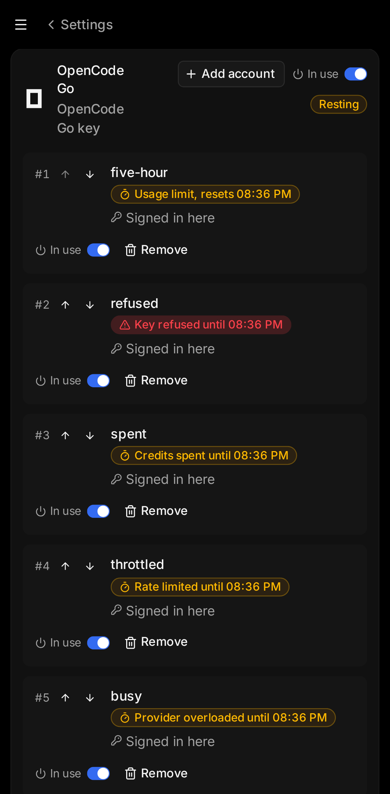
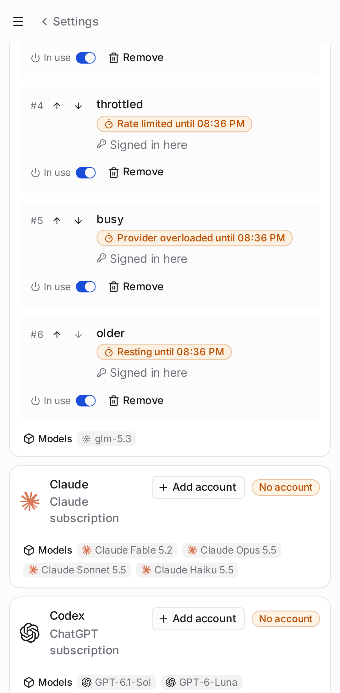
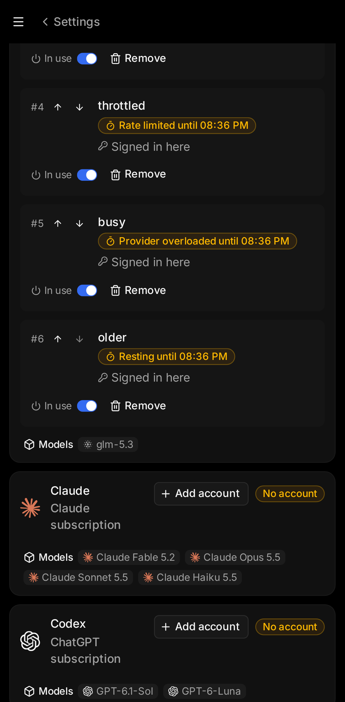

Why an account rests, in words (#1305)
Settings → Models, the OpenCode Go card with six keys, one for each code: usage_limit ("Usage limit, resets
…"), auth ("Key refused"), billing ("Credits spent"), rate_limit ("Rate limited"), overloaded ("Provider
overloaded") and unknown ("Resting until …", a cooldown made before this change). The provider's own words
are each badge's title. Taken by web/tests/models.spec.ts, "a resting account says why it rests"; on the
phone the sixth, unknown, is below the fold and has its own picture.
Light


Dark


Phone, the last key (unknown)

